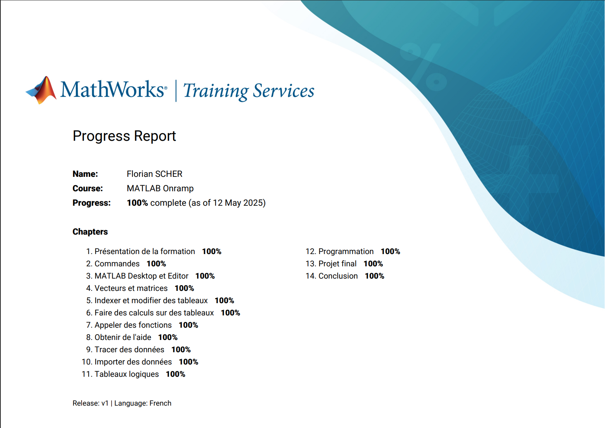

Contexte du projet
La SAE 2.2 vise à approfondir les connaissances en traitement du signal radiofréquence à travers
l'analyse pratique de la modulation de fréquence (FM) commerciale. L'objectif est de comprendre la
structure spectrale des signaux FM, d'analyser les différentes composantes (audio, pilote stéréo,
RDS) et d'extraire des informations numériques à l'aide de MATLAB et du récepteur RTL-SDR.
Objectifs principaux
- Comprendre la structure spectrale de la FM commerciale
- Analyser les différences entre signaux mono et stéréo
- Étudier le système RDS (Radio Data System)
- Utiliser HDSDR et RTL-SDR pour la réception radio
- Extraire des données RDS avec MATLAB/Simulink
- Comparer FM analogique et DAB+ numérique
Technologies étudiées
- Modulation de fréquence (FM) et multiplexage FDM
- Signal pilote stéréo à 19 kHz et sous-porteuse 38 kHz
- RDS (Radio Data System) à 57 kHz
- DAB+ (Digital Audio Broadcasting Plus)
- Récepteur RTL-SDR et logiciel HDSDR
- MATLAB/Simulink pour le traitement numérique
Structure des travaux pratiques
TP2 - Découverte du spectre FM
- Étude théorique : Composition du spectre FM stéréophonique
- Analyse des composantes : 0-15kHz (mono), 19kHz (pilote), 23-53kHz
(stéréo), 57kHz (RDS)
- Prise en main HDSDR : Interface RTL-SDR et réception radio
- Station BFM Business : Analyse spectrale de la station 107.1 MHz à Caen
- Démodulation : Observation du spectre audio démodulé
- Paramètres techniques : OBW, filtrage, qualité audio
TP3 - Extraction des données RDS
- Analyse comparative : Stations mono/stéréo avec et sans RDS
- Spectrogramme Waterfall : Visualisation temporelle des signaux
- Mesures OBW : Occupied Bandwidth selon le type de signal
- MATLAB/Simulink : Extraction automatique des informations RDS
- DAB+ vs FM : Comparaison des technologies analogique et numérique
- Calculs de débits : Débit brut audio et taux de compression MPEG-4
Technologies et outils utilisés
Hardware et logiciels
RTL-SDR (Récepteur radio défini par logiciel)
- Fréquence d'échantillonnage : Configuration jusqu'à 2.4 MHz
- Bande FM : Réception 87.5 - 108 MHz
- Antenne télescopique : Optimisée λ/4 ≈ 75 cm pour 100 MHz
- Interface USB : Connexion directe ordinateur
HDSDR (High Definition Software Defined Radio)
- Visualisation spectrale : Spectre RF temps réel et Waterfall
- Démodulation FM : Extraction audio avec réglage FM-BW
- Filtrage numérique : Filtres passe-bas configurables
- Enregistrement : Capture audio et données I/Q
MATLAB/Simulink
- Communications Toolbox : Démodulation et décodage RDS
- Traitement numérique : Analyse spectrale avancée
- Interface RTL-SDR : Acquisition directe des signaux
- Extraction RDS : Décodage nom station et métadonnées
Concepts théoriques appliqués
Modulation de fréquence
- FDM (Frequency Division Multiplexing) : Multiplexage fréquentiel
- Signal composite : Audio + pilote + stéréo + RDS
- Déviation de fréquence : ±75 kHz pour la FM commerciale
- Critère de Shannon : F_ech ≥ 2 × f_max pour l'échantillonnage
Système RDS
- Sous-porteuse 57 kHz : Modulation de phase numérique
- Débit 1187.5 bps : Transmission données parallèle audio
- Services : PS (nom station), RT (texte), AF (fréquences alternatives)
- Applications : Autoradio, changement automatique fréquence
Transition DAB+
- Échantillonnage 48 kHz : 16 bits stéréo = 1.536 Mbps brut
- Compression MPEG-4 : Réduction à 24 kbps (taux 1:64)
- Multiplexage temporel : Plusieurs stations par canal
- Déploiement France : Progressif depuis 2014, Caen 2022-2023
Mesures et analyses réalisées
Caractérisation des signaux FM
Stations analysées à Caen
| Type de station |
Fréquence (MHz) |
Stéréo |
RDS |
OBW estimée |
| Stéréo sans RDS |
103.200 |
OUI |
NON |
~150 kHz |
| Mono avec RDS |
107.100 (BFM Business) |
NON |
OUI |
~90 kHz |
| Stéréo avec RDS |
102.600 (Ici Normandie) |
OUI |
OUI |
~150 kHz |
Observations spectrales caractéristiques
- Signal pilote 19 kHz : Présent uniquement en stéréo
- Sous-porteuse 38 kHz : Composante L-R modulée en AM-DSB
- Porteuse RDS 57 kHz : Pic fin pour les données numériques
- Contenu vocal : Spectre concentré 0-15 kHz, OBW réduite
Étude de l'émetteur BFM Business
Caractéristiques techniques
- Localisation : Saint-Contest (14), 6 Rue de la Tour
- Coordonnées : 49° 12′ 43″ N, 0° 24′ 10″ W
- Puissance ERP : 2 kW (66.02 dBm)
- Longueur antenne émission : 67 m (λ/4 pour 107.1 MHz)
Diagramme de rayonnement
- Atténuation maximale : 6 dB (facteur 0.25)
- Atténuation direction Est : 2 dB (facteur 0.63)
- Couverture : Optimisée agglomération caennaise
Calculs de débits audio numériques
DAB+ - Paramètres de numérisation
- Fréquence d'échantillonnage : 48 000 Hz
- Résolution : 16 bits par échantillon
- Stéréo : 2 voies
- Débit brut calculé : 48 000 × 16 × 2 = 1 536 000 bps = 1.536 Mbps
Compression MPEG-4
- Débit après compression : 24 000 bps
- Taux de compression : 1 536 000 / 24 000 = 64
- Conclusion : Signal 64 fois plus petit qu'à l'état brut
Extraction RDS avec MATLAB
Configuration récepteur
Paramètres MATLAB/Simulink
- Fréquence porteuse : 102.6 MHz (Ici Normandie)
- RTL-SDR Source Block : Interface directe avec le récepteur
- FM Demodulator : Démodulation du signal composite
- RDS Decoder : Extraction des données numériques
Résultats obtenus
- Nom de station (PS) : "Ici-Normandie" correctement décodé
- Métadonnées musicales : Titre et artiste en cours d'écoute
- Limite du système : Nécessité d'un signal de qualité suffisante
- Applications : Affichage automatique informations sur autoradio
Compétences développées
Traitement du signal RF
- Compréhension des modulations analogiques (FM)
- Analyse spectrale de signaux complexes
- Maîtrise du multiplexage fréquentiel (FDM)
- Interprétation des spectrogrammes Waterfall
- Calculs d'Occupied Bandwidth (OBW)
Instrumentation et mesure
- Utilisation récepteur RTL-SDR
- Maîtrise du logiciel HDSDR
- Configuration antennes et optimisation réception
- Mesures de puissance et atténuation
- Analyse comparative multi-stations
Programmation et automatisation
- MATLAB Communications Toolbox
- Simulink pour traitement temps réel
- Décodage protocoles numériques (RDS)
- Interface logiciel-matériel (RTL-SDR)
- Automatisation acquisition et traitement
Systèmes de radiocommunication
- Fonctionnement chaînes de transmission FM
- Évolution technologique FM vers DAB+
- Réglementations et allocations fréquentielles
- Calculs de liaison et couverture radio
- Compression audio numérique (MPEG-4)
Manipulations pratiques réalisées
Exploration du spectre FM local
Procédure d'analyse
- Configuration RTL-SDR : Réglage fréquence et gain optimal
- Balayage bande FM : Identification stations actives 87.5-108 MHz
- Analyse individuelle : Démodulation et caractérisation spectrale
- Documentation : Captures écran et enregistrements audio
Critères d'évaluation
- Présence/absence signal pilote 19 kHz
- Détection sous-porteuse stéréo 38 kHz
- Identification composante RDS 57 kHz
- Mesure largeur spectrale occupée
- Évaluation qualité audio démodulée
Effet des filtres sur la qualité audio
Manipulation FM-BW (largeur de bande FM)
- Valeur optimale : 250 kHz pour qualité maximale
- Seuil dégradation : En dessous de 150 kHz, perte des aigus
- Impact stéréo : Coupure sous-porteuse 38 kHz si BW insuffisante
Filtrage passe-bas audio
- 60 kHz : Qualité optimale avec stéréo et RDS
- 16 kHz : Audio mono mais qualité musicale conservée
- 3-4 kHz : Qualité téléphonique, parole intelligible
Étude comparative FM analogique vs DAB+ numérique
Analyse des avantages DAB+
Qualité audio
- FM : Sensible aux interférences, effet de capture
- DAB+ : Audio numérique, qualité constante dans zone de couverture
- Bande passante : DAB+ jusqu'à 20 kHz vs FM limitée
Capacité et services
- FM : 1 programme par fréquence
- DAB+ : 10-15 programmes par multiplex
- Données : DAB+ permet images, météo, infos trafic détaillées
Déploiement en France
- Phase pilote : 2007 autoroute A7 Lyon-Valence
- Grandes villes : Déploiement progressif depuis 2014
- Caen : Lancement novembre 2022, émetteur TDF janvier 2023
- Perspective : Remplacement progressif FM d'ici 2033
Ce que je retiens
Ce projet m'a permis de découvrir concrètement le monde de la radio professionnelle et de
comprendre la complexité cachée derrière la simple écoute d'une station FM. L'analyse spectrale
révèle l'ingéniosité du multiplexage fréquentiel qui permet de transmettre simultanément l'audio
mono, stéréo et les données numériques RDS.
L'utilisation du RTL-SDR et d'HDSDR m'a initié aux techniques de radio définie par logiciel
(SDR), une approche moderne qui révolutionne l'instrumentation RF. La possibilité d'analyser et
démoduler des signaux réels avec un équipement abordable ouvre de nombreuses perspectives.
L'extraction automatique des données RDS avec MATLAB illustre parfaitement l'intégration
logiciel-matériel et l'automatisation des mesures. Cette expérience pratique renforce la
compréhension théorique des modulations et protocoles de communication.
L'étude comparative FM/DAB+ met en perspective les enjeux technologiques actuels de la
radiodiffusion et la transition numérique en cours, similaire à celle vécue en télévision avec
le passage analogique-TNT.
Difficultés rencontrées
Qualité de réception variable
La réception RTL-SDR s'est révélée sensible à l'environnement électromagnétique du laboratoire.
Le positionnement et l'orientation de l'antenne ont nécessité plusieurs ajustements pour obtenir
des signaux exploitables, particulièrement pour les stations les plus éloignées.
Configuration MATLAB/Simulink
L'interface entre MATLAB et le RTL-SDR a demandé l'installation de pilotes spécifiques et la
configuration de blocks Simulink. Certains paramètres d'acquisition ont dû être optimisés pour
éviter les saturations et obtenir un décodage RDS fiable.
Interprétation des mesures spectrales
La distinction entre les différentes composantes spectrales (pilote, stéréo, RDS) et
l'estimation précise de l'OBW ont nécessité une bonne maîtrise des outils d'analyse d'HDSDR et
une compréhension fine de la théorie du multiplexage FM.
Axes d'amélioration
Étude des signaux DAB+
Compléter l'analyse par la réception effective de signaux DAB+ locaux et leur démodulation avec
les outils SDR. Cela permettrait une comparaison pratique directe avec la FM plutôt que
seulement théorique.
Plan d'action : Acquisition d'un récepteur DAB+ compatible RTL-SDR et
développement de scripts MATLAB pour l'analyse OFDM.
Cartographie de couverture
Développer une application de mesure automatisée pour cartographier la couverture réelle des
émetteurs FM locaux et valider les modèles de propagation théoriques.
Plan d'action : Intégration GPS pour géolocalisation des mesures et
développement d'algorithmes de prédiction de couverture.
Intelligence artificielle
Explorer l'application du machine learning pour la classification automatique des types de
contenus radio (musique, parole, publicité) à partir de l'analyse spectrale temps réel.
Auto-évaluation
| Compétence |
Niveau |
Justification |
| Théorie FM et modulations |
⭐⭐⭐⭐⭐ |
Maîtrise complète des concepts et calculs théoriques |
| Utilisation RTL-SDR/HDSDR |
⭐⭐⭐⭐☆ |
Prise en main de la manipulation RTL-SDR assez simple |
| MATLAB |
⭐⭐⭐⭐⭐ |
Obtention de la licence MATLAB

|